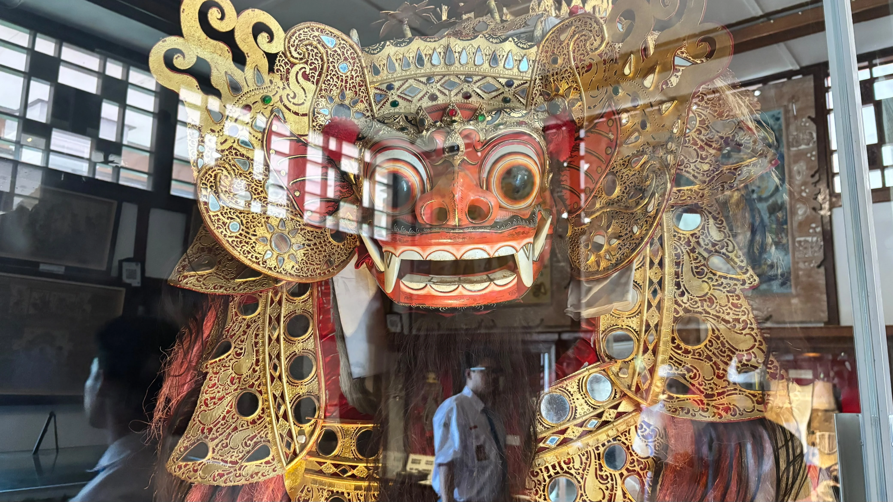
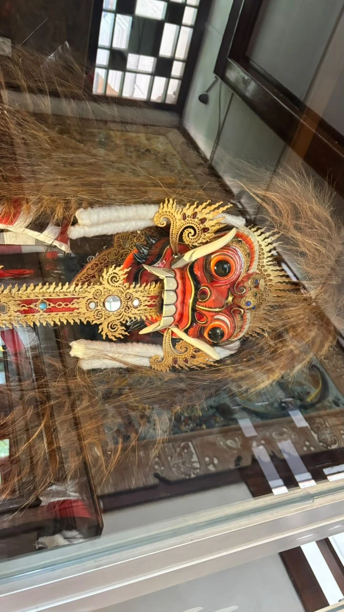
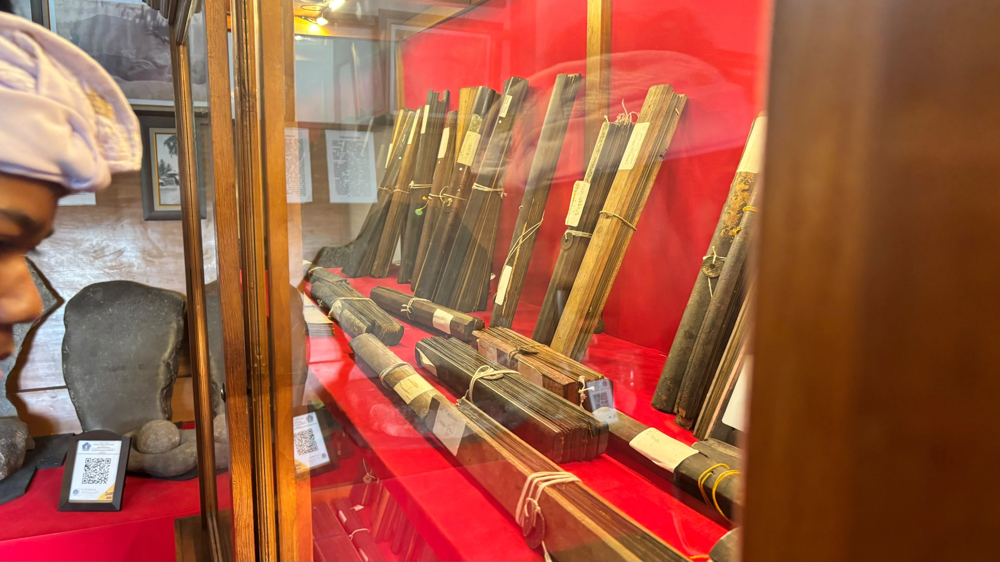
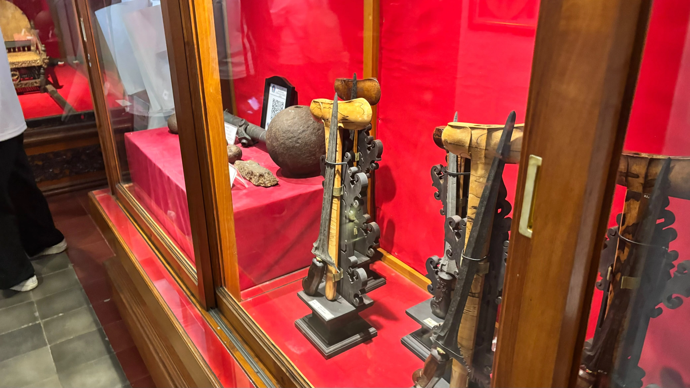
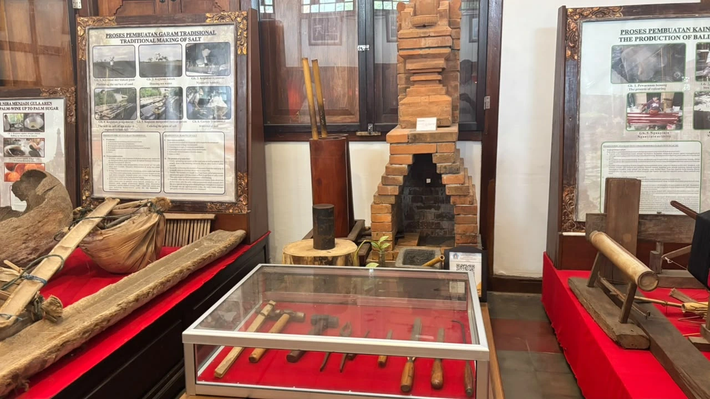
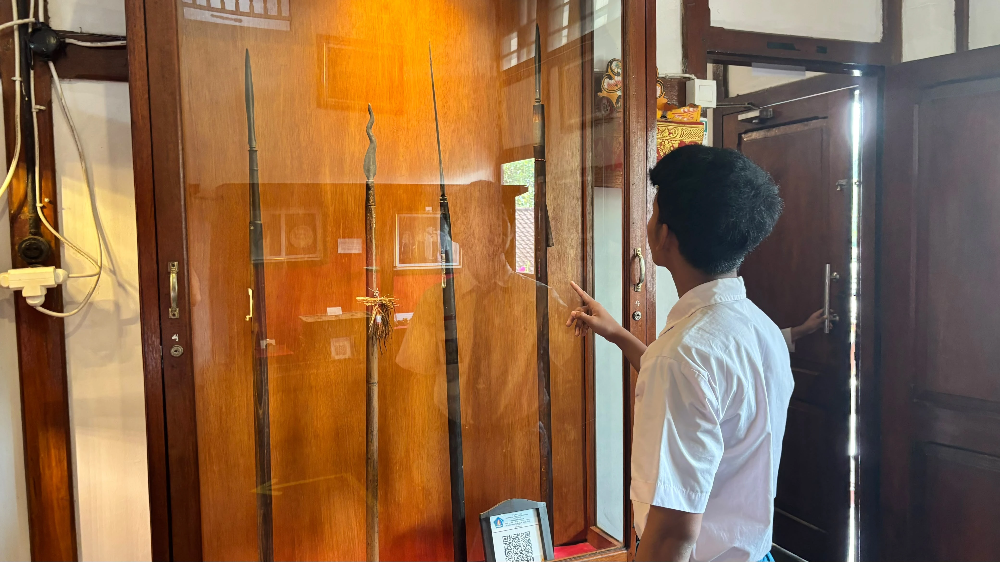

Kebudayaan Klungkung
Menyelami keindahan seni lukis Wayang Kamasan, arsitektur Kertha Gosa, dan tradisi luhur yang terus hidup di Bumi Semarapura.
Seni Lukis Wayang Kamasan
Gaya lukisan klasik tradisional Bali yang berpusat di Desa Kamasan, Klungkung, dikenal dengan motif pewayangan dan warna alami. Setiap lukisan mengisahkan epik Ramayana dan Mahabharata serta kehidupan estetika kerajaan.


Barong: Penjaga Kebaikan dalam Tradisi Bali
Barong adalah lambang kesehatan dan keberuntungan bagi masyarakat Bali, tokoh yang berhadapan dengan Rangda.
Celuluk: Pengikut Rangda dalam Kisah Calonarang
alam cerita Calonarang, Celuluk dikenal sebagai pelayan atau pengikut Rangda, digambarkan bertaring dan berwajah seram, namun kerap berperan jenaka. Calonarang sendiri menggambarkan adu kekuatan antara kebaikan dan kejahatan.


Lontar
ontar adalah naskah kuno yang ditulis pada lembaran daun lontar kering, lalu dijajarkan dan diikat dengan tali yang dilengkapi koin berlubang. Isinya beragam, dari sastra dan ajaran agama sampai pengobatan dan aturan hidup, umumnya ditulis dengan aksara Bali.
Senjata Kerajaan Klungkung

Keris: Senjata Sekaligus Pusaka
Keris adalah senjata tikam tradisional dengan bilah runcing yang pangkalnya melebar tidak simetris. Di Nusantara, keris tidak hanya dipandang sebagai senjata, tetapi juga sebagai pusaka dan bagian dari busana adat, UNESCO mengakui keris sebagai “Karya Agung Warisan Budaya Lisan dan Takbenda Manusia.”

Memande
Pande dikenal sebagai para pengrajin logam dalam masyarakat Bali, yang menempa besi menjadi perkakas dan senjata. Di museum, tungku dari susunan bata merah, tabung bambu, serta palu dan pahat di vitrin memperlihatkan bahwa pekerjaan ini bertumpu pada alat sederhana dan keterampilan tangan.

Deretan Tombak Tradisional
Tombak, yang dalam bahasa Bali disebut tumbak, adalah senjata bertangkai panjang dengan mata runcing di ujungnya. Keempat tombak di vitrin ini punya mata yang berbeda: satu berbentuk daun, satu berlekuk seperti nyala api, dan dua lainnya berbilah panjang dan ramping. Tombak tidak berhenti sebagai senjata. Pada Tumpek Landep, umat Hindu Bali memberi persembahan khusus untuk benda berbahan logam, termasuk keris dan senjata pusaka, dan warga Pande membersihkan serta menyucikan pusaka leluhur seperti keris dan tombak pada hari itu.